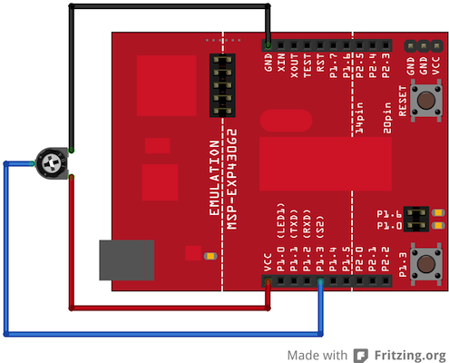

<!DOCTYPE html>
<html>
<head>
  <title>Energia Reference - Tutorials </title>
  <link rel="shortcut icon" type="image/x-icon" href="http://energia.nu/img/eicon.png">
  <link rel='stylesheet' href='energiaWideRender.css' 
type='text/css' />
    <!--HeaderText--><style type='text/css'></style>  
  <meta name='robots' content='index,follow' />
  <meta name="Author" content="Robert Wessels" />
  <meta name="Publisher" content="Energia" />
  <meta name="Keywords" content="Energia, Wiring, Processing, Maker, LaunchPad, Arduino, Texas Instruments, Sketch, MSP430, mspgcc, mpsdebug, Electronic Arts, Programming, C, C++, Robert Wessels" />
  <meta name="Description" content="Energia is a rapid prototyping platform for the Texas Instruments MCU Launchpad. Energia is based on Wiring and Arduino and uses the Processing IDE." />
  <meta name="Copyright" content="All contents copyright Robert Wessels" />

</head>
<body>
<div id="page">
  <!--PageHeaderFmt-->
  <div id="pageheader">
    <div class="title"><a href='http://energia.nu'>Energia</a></div>
  </div>
  <!--/PageHeaderFmt-->

  <!--PageLeftFmt-->
  <div id="pagenav">
    <div id="navbar">
  	<p><a class='wikilink' href='http://energia.nu/'>Home</a>
<a class='wikilink' href='http://energia.nu/download'>Download</a>
<a class='wikilink' href='Guide_index.html'>Getting Started</a>
<a class='wikilink' href='index.html'>Reference</a>
<a class="wikilink" href="http://energia.nu/help.html">Getting Help</a>
<a class="nav" href="http://energia.nu/faq.html">FAQ</a>
<a class="wikilink" href="http://energia.nu/projects.html">Projects Using Energia</a>
<a class="nav" href="http://energia.nu/contact.html">Contact Us</a>
</p>


<p class='vspace'></p>

    </div>
  </div>
  <!--/PageLeftFmt-->

  <div id="pagetext">
  <!--PageText-->
<div id='wikitext'>
<p><em>Examples &gt; Analog</em>
</p>
<p class='vspace'></p><h3>Smoothing</h3>
<p>This sketch reads repeatedly from an analog input, calculating a running average and printing it to the computer. This example is useful for smoothing out the values from jumpy or erratic sensors, and also demonstrates the use of <a href='Array.html'>arrays</a> to store data. 
</p>
<p class='vspace'></p><div  class='BOM' >
<h3>Hardware Required</h3>
<ul><li>MSP-EXP430G2 LaunchPad
</li><li>a variable resistor, like a potentiometer
</li></ul><p class='vspace'></p></div>
<h3>Relevant Groundwork</h3>
<p>The code below sequentially stores 10 readings from your analog sensor into an array, one by one. With each new value, the sum of all the numbers is generated and divided, producing an average value which can then be used to smooth outlying data. Because this averaging takes place each time a new value is added to the array (rather than waiting for 10 new values, for instance) there is no lag time in calculating this running average. Altering the size of the array used, by changing <code>numReadings</code> to a larger value will smooth the data collected even further. 
</p>
<p class='vspace'></p><p>Connect the three wires from the potentiometer to your LaunchPad board. The first goes to ground from one of the outer pins of the potentiometer. The second goes from 3 volts to the other outer pin of the potentiometer. The third goes from analog input A3 to the middle pin of the potentiometer.
</p>
<p class='vspace'></p><p>By turning the shaft of the potentiometer, you change the amount of resistance on either side of the wiper which is connected to the center pin of the potentiometer. This changes the voltage at the center pin. When the resistance between the center and the side connected to 3 volts is close to zero (and the resistance on the other side is close to 10 kilohms), the voltage at the center pin nears 3 volts.  When the resistances are reversed, the voltage at the center pin nears 0 volts, or ground. This voltage is the <strong>analog voltage</strong> that you're reading as an input.  
</p>
<p class='vspace'></p><p>The LaunchPad has a circuit inside called an <strong>analog-to-digital converter</strong> that reads this changing voltage and converts it to a number between 0 and 1023.  When the shaft is turned all the way in one direction, there are 0 volts going to the pin, and the input value is 0. When the shaft is turned all the way in the opposite direction, there are 3 volts going to the pin and the input value is 1023. In between, <a class='wikilink' href='AnalogRead.html'>analogRead</a>() returns a number between 0 and 1023 that is proportional to the amount of voltage being applied to the pin.
</p>
<p class='vspace'></p><h3>Circuit</h3>
<div  class='circuit' >
<div></div>
<p class='vspace'></p><p><span style='font-size:83%'>image developed using <a class='urllink' href='http://www.fritzing.org' rel='nofollow'>Fritzing</a>. For more circuit examples, see the <a class='urllink' href='http://fritzing.org/projects/' rel='nofollow'>Fritzing project page</a> </span>
</p>
<p class='vspace'></p></div>
<p class='vspace'></p><h3>Schematic</h3>
<div  class='circuit' >
<div></div>
</div>
<p class='vspace'></p><h3>Code Explanation</h3>
<p>None.
</p>
<p class='vspace'></p><h3>Code</h3>
<pre>
/*
  Smoothing

  Reads repeatedly from an analog input, calculating a running average
  and printing it to the computer. Keeps ten readings in an array and 
  continually averages them.

  The circuit:
  * Analog sensor (potentiometer will do) attached to analog input 3

  Created 22 April 2007
  By David A. Mellis <dam@mellis.org>
  modified 9 Apr 2012
  by Tom Igoe
  modified 9 May 2013
  by Sean Alvarado

  This example code is in the public domain.

*/

// Define the number of samples to keep track of. The higher the number,
// the more the readings will be smoothed, but the slower the output will
// respond to the input. Using a constant rather than a normal variable lets
// use this value to determine the size of the readings array.

const int numReadings = 10;

int readings[numReadings]; // the readings from the analog input
int index = 0; // the index of the current reading
int total = 0; // the running total
int average = 0; // the average

int inputPin = A3;

void setup()
{
  // initialize serial communication with computer:
  Serial.begin(9600); 
  // initialize all the readings to 0: 
  for (int thisReading = 0; thisReading < numReadings; thisReading++)
    readings[thisReading] = 0; 
}

void loop() {
  // subtract the last reading:
  total= total - readings[index]; 
  // read from the sensor: 
  readings[index] = analogRead(inputPin); 
  // add the reading to the total:
  total= total + readings[index]; 
  // advance to the next position in the array: 
  index = index + 1; 

  // if we're at the end of the array...
  if (index >= numReadings) 
    // ...wrap around to the beginning: 
    index = 0; 

  // calculate the average:
  average = total / numReadings; 
  // send it to the computer as ASCII digits
  Serial.println(average); 
  delay(1); // delay in between reads for stability 
}
</pre>
<h3>Working Video</h3>
(Insert Video Here)
<h3>Try it out:</h3>
- add an LED to the program that reacts to the potentiometer
<p class='vspace'></p><h3>See Also:</h3>
<ul><li><a class='wikilink' href='Setup.html'>setup</a>()
</li><li><a class='wikilink' href='Loop.html'>loop</a>()
</li><li><a class='wikilink' href='AnalogRead.html'>analogRead</a>() 
</li><li><a class='wikilink' href='Int.html'>int</a>
</li><li><a class='wikilink' href='Serial.html'>serial</a>
</li><li><a class='wikilink' href='Float.html'>float</a>
</li><li><a class='wikilink' href='Tutorial_BareMinimum.html'>BareMinimum</a>: The bare minimum of code needed to start an Energia sketch.
</li><li><a class='wikilink' href='Tutorial_Blink.html'>Blink</a>: Turn an LED on and off.
</li><li><a class='wikilink' href='Tutorial_DigitalReadSerial.html'>DigitalReadSerial</a>: Read a switch, print the state out to the Energia Serial Monitor.
</li><li><a class='wikilink' href='Tutorial_AnalogReadSerial.html'>AnalogReadSerial</a>: Read a potentiometer, print it's state out to the Energia Serial Monitor.
</li><li><a class='wikilink' href='Tutorial_Fade.html'>Fade</a>: Demonstrates the use of analog output to fade an LED.
</li><li><a class='selflink' href='Tutorial_ReadAnalogVoltage.html'>ReadAnalogVoltage</a> : Reads an analog input and prints the voltage to the serial monitor
</li></ul>
<p class='vspace'></p><p><a class='wikilink' href='Guide_index.html'>Getting Started Home</a>
</p>
<p class='vspace'></p><p><em>Corrections, suggestions, and new documentation should be posted to the <a class='urllink' href='http://forum.43oh.com/forum/28-energia/' rel='nofollow'>Forum</a>.</em>
</p>
<p class='vspace'></p><p>The text of the Energia reference is licensed under a
<a class='urllink' href='http://creativecommons.org/licenses/by-sa/3.0/' rel='nofollow'>Creative Commons Attribution-ShareAlike 3.0 License</a>.  Energia reference is based on the Arduino reference. Code samples in the reference are released into the public domain.
</p>
</div>


  </div>

  <!--PageFooterFmt-->
  <div id="pagefooter">
&copy;Energia | 
  <a href='#'>Edit Page</a> | <a href='#'>Page History</a> | <a href=#' target='_blank'>Printable View</a> | <a href='#'>All Recent Site Changes</a>
  </div>
  <!--/PageFooterFmt-->

</div>
</body>
</html>
